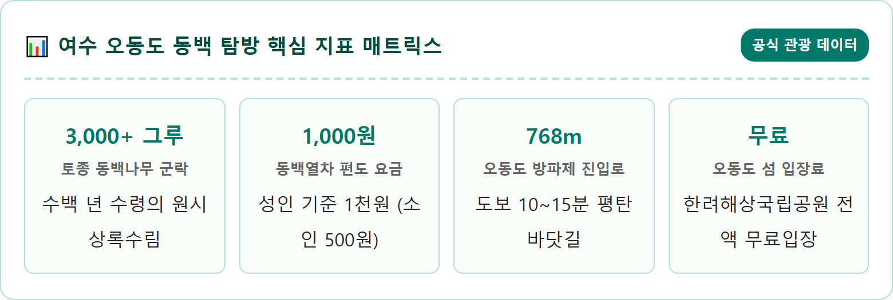
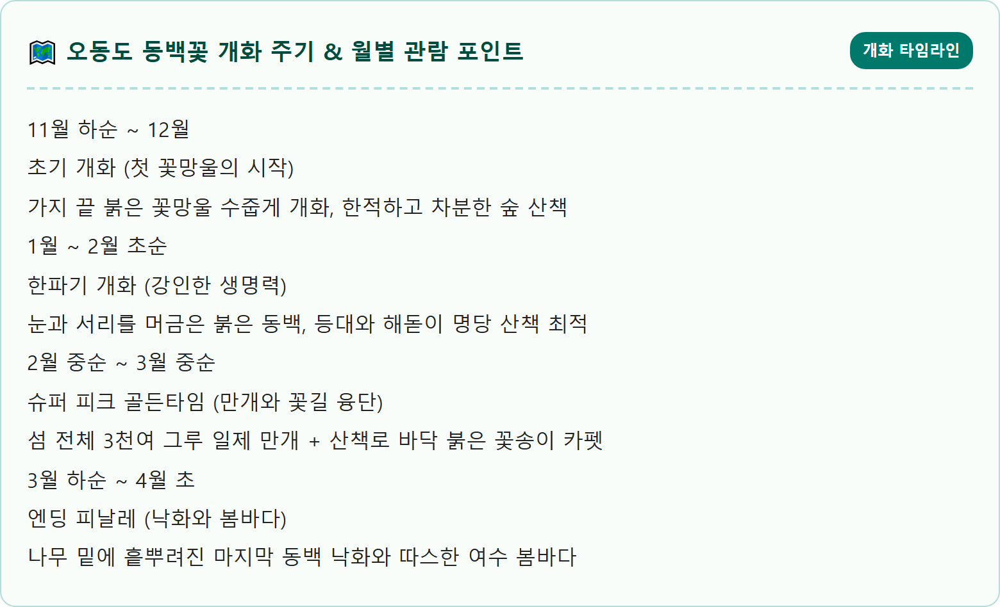
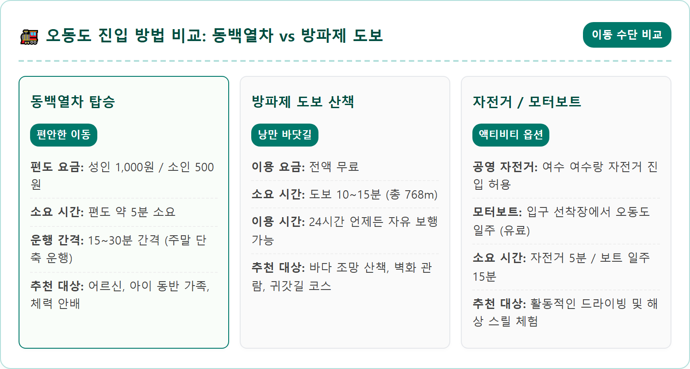
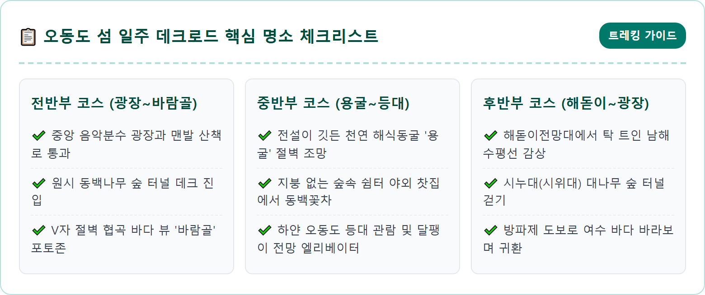
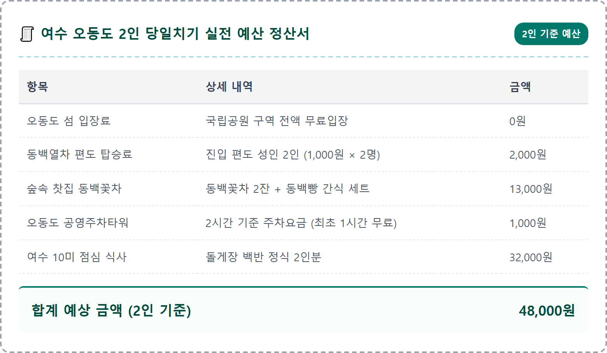
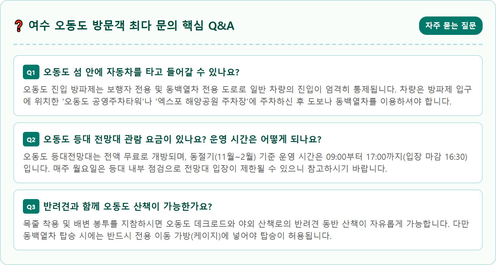

A vibrant, cinematic late autumn and winter travel photograph of Odongdo Island in Yeosu, South Korea. A wooden boardwalk trail winds peacefully beneath a canopy of lush evergreen camellia trees heavily laden with brilliant red camellia blossoms. Soft sunlight filters through the green leaves, illuminating delicate red petals sprinkled on the clean wooden path. In the background, the sparkling blue sea of Yeosu and the white modern lighthouse stand gracefully against an azure winter sky. Extremely crisp details, natural lighting, photorealistic, 8k resolution, romantic and tranquil coastal vibe, 1:1 aspect ratio.
전라남도 여수시의 상징이자 남해안 최고의 해양 관광 명소인 '오동도(梧桐島)'는 멀리서 바라본 섬의 모양이 오동나무 잎사귀를 닮았다고 하여 지어진 이름입니다. 하지만 오늘날 오동도를 전국적인 명성으로 이끈 주인공은 오동나무가 아닌 섬 전체를 빽빽하게 뒤덮고 있는 3천여 그루가 넘는 울창한 토종 동백나무 군락입니다. 이 때문에 사람들은 오동도를 '바다의 꽃섬' 혹은 '동백섬'이라 부르며 사계절 내내 사랑을 아끼지 않습니다.
오동도의 동백나무들은 도심 속 공원에 흔히 식재된 원예용 외래종 애기동백과 확연히 다릅니다. 키가 5~8미터에 달하는 아름드리 토종 동백나무들이 오랜 세월 해풍을 맞으며 자라나 거대한 숲 터널을 이루고 있습니다. 잎사귀 표면이 두껍고 윤기가 흘러 짙은 초록빛 광택을 뿜어내며, 샛노란 수술을 가운데 품은 순수한 선홍색 꽃잎은 단아하면서도 강렬한 남도의 생명력을 뽐냅니다.
초겨울의 차가운 바닷바람을 뚫고 오동도 숲길 안으로 들어서는 순간, 울창한 상록수 터널이 바람을 막아주어 아늑하고 따스한 온기가 온몸을 감쌉니다. 나뭇가지 사이사이로 수줍게 고개를 내민 붉은 꽃송이들과 발아래 떨어진 꽃잎들이 어우러져 만들어내는 낭만적인 풍경은 겨울 여행자들의 가슴속에 잊지 못할 따스한 설렘을 가득 채워줍니다.

오동도 동백꽃의 개화 시기는 겨울을 시작으로 봄까지 이어지는 기나긴 여정을 자랑합니다. 11월 중하순경 찬 바람이 불기 시작하면 나뭇가지 끝에 맺혀 있던 통통한 꽃망울들이 하나둘씩 입을 벌리며 첫 개화를 알립니다. 12월부터 1월 사이에는 짙푸른 나뭇잎 사이로 수줍게 붉은 점을 찍듯 꽃송이들이 피어나 겨울 바다를 찾는 여행객들에게 반가운 인사를 건넵니다.
하지만 오동도가 지닌 진정한 동백의 마법은 해양성 기온이 본격적으로 상승하기 시작하는 2월 중순부터 시작됩니다. 이때부터 3월 중하순까지는 3천여 그루의 나무마다 수백 송이의 붉은 꽃들이 일제히 꽃망울을 터뜨리며 섬 전체를 붉은 불꽃으로 뒤덮는 폭발적인 만개의 장관을 연출합니다.
특히 3월 초순과 중순에 오동도를 찾으시면 나무 위에 피어 있는 싱싱한 꽃송이뿐만 아니라, 꽃잎이 하나씩 떨어지는 것이 아니라 꽃송이 전체가 툭툭 떨어져 흙길과 나무 데크 위에 붉은 융단을 깔아놓은 듯한 환상적인 '낙화의 바다'를 감상할 수 있습니다. 바닥에 떨어진 꽃송이가 전혀 시들지 않고 가장 아름다운 절정의 상태 그대로 땅 위에 놓여 있는 모습은 오동도 동백만이 선사하는 가장 시적인 풍경입니다.

오동도는 육지와 완전히 떨어진 섬이 아니라, 여수 신항 오동도 입구에서부터 섬까지 768m 길이의 튼튼한 방파제 도로로 연결되어 있습니다. 따라서 섬으로 들어가는 방법은 방파제를 따라 걸어가는 '도보 산책'과 귀여운 외관을 자랑하는 '동백열차' 탑승 두 가지로 나뉩니다.
동백열차는 방파제 길을 따라 운행하는 무궤도 관광 열차로, 알록달록한 디자인과 함께 편도 약 5분 만에 오동도 중앙 광장까지 빠르고 편리하게 데려다줍니다. 편도 이용 요금은 성인 1,000원, 청소년·어르신 500원, 초등학생 500원으로 매우 저렴합니다. 무인 키오스크 자동 발권기를 통해 카드 결제로 간편하게 표를 구매할 수 있습니다. 운행 시간은 평일과 주말 오전 09:30부터 오후 17:00까지 약 15~30분 간격으로 수시 운행됩니다.
가장 추천하는 실전 이용 팁은 '갈 때는 동백열차, 올 때는 도보 산책'의 조합입니다. 섬으로 들어갈 때는 동백열차를 타고 편안하게 이동하며 방파제 너머로 펼쳐진 여수 바다 풍경을 감상하고, 섬 트레킹을 마친 뒤 나올 때는 도보로 약 10~15분간 천천히 걸어 나오며 방파제 벽화와 시원한 바닷바람, 그리고 멀리 여수 엑스포장과 해상케이블카를 조망하는 동선이 피로도와 낭만 두 마리 토끼를 모두 잡는 비결입니다.

동백열차에서 내려 오동도 중앙 잔디광장에 도착하면 본격적인 섬 일주 둘레길 탐방이 시작됩니다. 오동도는 섬 전체에 약 2.5km에 달하는 친환경 목재 데크로드가 거미줄처럼 잘 정비되어 있어 흙먼지를 묻히지 않고도 쾌적하게 숲길을 걸을 수 있습니다. 전체 코스를 쉬엄쉬엄 둘러보는 데는 약 1시간 30분 안팎이 소요됩니다.
둘레길을 걷다 보면 반드시 들러야 할 첫 번째 명소는 '바람골(바람의 골짜기)'입니다. 바위 절벽이 V자 모양으로 갈라진 좁은 협곡 사이로 푸른 남해바다가 내려다보이는 이곳은, 한겨울에도 바다에서 시원하고 거센 바람이 골짜기를 타고 솟구쳐 올라와 이름 붙여졌습니다. 협곡 바위 틈새로 내리쬐는 햇살과 넘실대는 파도가 어우러져 오동도 최고의 자연 포토스팟으로 손꼽힙니다.
바람골을 지나 해안 절벽 쪽으로 계단을 내려가면 파도의 침식 작용으로 거대한 바위 절벽에 뚫린 해식동굴인 '용굴'을 마주하게 됩니다. 비가 오면 오동도에 살던 용이 지하 통로를 통해 연등천 용굴로 이동하여 물을 먹고 왔다는 전설이 전해져 내려오는 곳으로, 깎아지른 절벽 틈으로 들이치는 파도 소리가 웅장한 자연의 울림을 전해줍니다.

오동도에서 가장 높은 언덕 정상부에 우뚝 솟아 있는 백색의 '오동도 등대'는 1952년 첫 불을 밝힌 이래 70년이 넘는 세월 동안 여수항과 광양항을 오가는 수많은 선박의 안전을 지켜온 역사의 등불입니다. 높이 27m의 백색 원형 콘크리트 구조물로 우아한 자태를 뽐내며, 등대 내부에는 엘리베이터와 나선형 계단이 설치되어 있어 누구나 무료로 전망대에 오를 수 있습니다.
등대 전망대에 서면 360도 통유리창 너머로 남해안 다도해의 올망졸망한 섬들과 여수 신항, 거북선대교, 그리고 저 멀리 남해군과 돌산도까지 한눈에 조망되는 파노라마 절경이 펼쳐집니다. 등대 1층 전시실에는 등대의 역사와 항로표지 시설을 소개하는 알찬 전시 공간이 마련되어 있어 가족 단위 여행객들에게 유익한 교육의 장을 제공합니다.
등대 바로 옆 해안 절벽 쪽으로 나무 데크를 따라 나가면 오동도 최고의 일출 명소인 '해돋이전망대'가 나옵니다. 넓은 나무 데크 쉼터 너머로 끝없이 펼쳐진 수평선 위로 붉은 태양이 솟아오르는 장엄한 해돋이는 여수 시민들이 새해 첫날 가장 먼저 찾는 영험한 명소이기도 합니다. 낮에는 푸른 바다 위로 은빛 윤슬이 부서지고, 해질녘에는 붉은 노을빛이 바다를 물들이는 낭만적인 뷰를 선물합니다.

오동도 둘레길 중간 숲속에 다다르면 은은한 차 향기가 발걸음을 멈추게 하는 아늑한 목조 건물 쉼터를 만나게 됩니다. 동백나무 숲으로 둘러싸인 이 '동백 숲속 야외 찻집'은 오동도를 찾은 여행객들에게 가장 사랑받는 오아시스 같은 휴식 공간입니다.
이곳의 시그니처 메뉴는 식용 동백꽃잎을 정성껏 덖어 만든 '따뜻한 동백꽃차'입니다. 투명한 찻잔 속에 연한 붉은빛으로 우러난 꽃차는 코끝을 스치는 은은한 단향과 함께 목 넘김이 매우 부드럽고 깔끔하여, 바닷바람에 차가워진 몸을 녹이기에 안성맞춤입니다. 붉은 동백 앙금이 들어간 달콤한 '동백빵'을 곁들이면 더없이 훌륭한 디저트가 됩니다.
야외 나무 테이블 위에는 숲에서 떨어진 붉은 동백꽃송이들이 꽃병에 정갈하게 꽂혀 있어 감성적인 소품 역할을 톡톡히 합니다. 찻잔을 들고 동백꽃 터널을 배경으로 찍는 사진은 SNS에 올리기 좋은 대표 인생샷으로 인기가 높습니다. 자연이 베푼 그늘 아래 앉아 따스한 차를 마시며 도란도란 이야기를 나누는 시간은 바쁜 일상에서 누리기 힘든 최고의 힐링을 안겨줍니다.
오동도 탐방을 마치고 나왔다면 바로 입구와 연결된 '여수 해상케이블카'를 연계하여 바다 위를 가르는 환상적인 하늘 드라이브를 즐겨보시기 바랍니다. 오동도 공영주차장 바로 옆에 위치한 '자산탑승장(해야정류장)'은 11층 높이의 전망 엘리베이터를 타고 곧바로 케이블카 탑승장으로 올라갈 수 있도록 설계되어 있어 이동이 매우 편리합니다.
바다 위 80~90m 상공을 가로지르는 해상케이블카는 자산공원에서 출발해 거북선대교 상공을 지나 돌산공원(놀정류장)까지 편도 약 1.5km 구간을 13분간 운행합니다. 발아래 바닥이 투명한 강화유리로 마감된 '크리스탈 캐빈'을 탑승하면 발밑으로 푸른 바다 물결과 지나가는 어선들이 아찔하게 내려다보여 짜릿한 스릴을 만끽할 수 있습니다.
돌산탑승장에 도착하면 여수 최고의 야경 명소인 돌산공원 전망대가 기다리고 있습니다. 해 질 무렵 탑승하여 노을빛으로 물드는 여수 구항과 형형색색 화려한 경관 조명이 켜지는 거북선대교, 하멜등대, 그리고 낭만포차 거리의 불빛을 감상하는 코스는 여수 여행의 잊지 못할 하이라이트를 장식합니다.
남도의 맛을 논할 때 결코 빠질 수 없는 미식의 수도 여수에서 즐기는 점심 식사는 여행의 만족도를 배로 끌어올려 줍니다. 오동도 입구와 인근 봉산동, 중앙동 일대에는 여수를 대표하는 향토 음식인 '돌게장 백반' 전문점들이 즐비하게 늘어서 있습니다.
여수 돌게장은 일반 꽃게보다 크기는 작지만 껍질이 단단하고 살이 꽉 차 있어 씹을수록 깊고 진한 단맛과 감칠맛이 우러납니다. 짜지 않고 달착지근하게 달여낸 간장게장과 매콤달콤한 특제 양념에 버무린 양념게장이 커다란 접시에 푸짐하게 담겨 나오며, 등딱지에 밥을 비벼 김에 싸 먹으면 밥 두세 공기는 순식간에 비워내는 진정한 밥도둑입니다. 대부분의 전문점에서 1~2회 리필 서비스를 제공하여 푸짐하게 즐길 수 있습니다.
돌게장과 함께 반드시 맛보아야 할 또 하나의 여수 별미는 막걸리 식초로 새콤달콤하게 무쳐낸 '서대회무침'입니다. 부드러운 서대 살에 아삭한 미나리와 양파를 넣고 버무려 큰 대접에 밥과 참기름을 두르고 비벼 먹는 서대회 덮밥은 잃었던 겨울철 입맛을 단숨에 사로잡습니다. 알싸한 여수 특산품 '돌산 갓김치'를 곁들이면 완벽한 남도 바다 밥상이 완성됩니다.

오동도 여행을 더욱 쾌적하고 알뜰하게 즐기기 위한 마지막 꿀팁을 정리해 드립니다. 첫째, 짐이 많은 뚜벅이 여행자라면 오동도 입구 관광안내소와 동백열차 매표소 옆에 설치된 '무료 물품보관함'을 적극 활용하시기 바랍니다. 무거운 배낭이나 캐리어를 보관함에 맡기고 가벼운 옷차림으로 섬 트레킹에 나서면 한결 산뜻하게 둘레길을 완주할 수 있습니다.
둘째, 주차 팁입니다. 오동도 바로 앞 '오동도 공영주차타워'는 최초 1시간이 전액 무료로 제공되며, 이후 10분당 200원(1시간당 1,200원)의 매우 저렴한 요금이 부과됩니다. 주말 피크 시간대에는 주차타워가 만차될 수 있으므로, 만차 시에는 차량으로 2분 거리인 '여수세계박람회장 국제관 주차장'이나 '수정동 공영주차장'을 대체 주차장으로 이용하시면 대기 시간을 크게 줄일 수 있습니다.
천혜의 남해 바다와 붉은 동백꽃이 만들어내는 가장 찬란한 겨울의 서정시, 여수 오동도. 올겨울, 사랑하는 가족이나 연인과 함께 바다 위를 가르는 동백열차를 타고 붉은 꽃길 터널을 걸으며 따뜻하고 낭만적인 추억을 가득 남겨보시기 바랍니다.
| 구분 | 세부 내용 | 이용 꿀팁 및 안내 |
|---|---|---|
| 위치 주소 | 전남 여수시 수정동 산 1-11 (오동도) | 내비게이션: 오동도 공영주차타워 또는 오동도 입구 |
| 입장 요금 | 국립공원 섬 전액 무료입장 | 24시간 상시 개방 (야간 조명 점등) |
| 동백열차 요금 | 편도 대인 1,000원 / 소인 500원 | 09:30 ~ 17:00 수시 운행 (키오스크 카드 발권) |
| 소요 시간 | 방파제 도보 10~15분 / 둘레길 순환 약 1시간 30분 | 총 탐방 권장 소요시간 약 2시간~2시간 30분 |
| 주차 안내 | 오동도 공영주차타워 (최초 1시간 무료) | 1시간 초과 시 10분당 200원 (일 최대 10,000원) |
| 연계 코스 | 여수 해상케이블카(도보 3분), 자산공원(5분) | 아쿠아플라넷 여수(10분), 이순신광장(10분) |